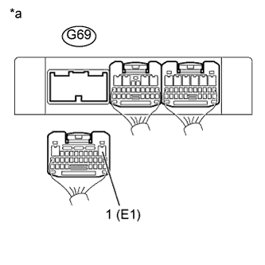

СИСТЕМА АВТОМАТИЧЕСКОЙ ТРАНСМИССИИ (для моделей с 1KD-FTV) > Цепь питания ЭБУ |
| 1.ПРОВЕРЬТЕ TCM (TCM – МАССА) |
|  |
Отсоедините разъем G69 TCM.
Измерьте сопротивление в соответствии со значениями, приведенными в таблице ниже.
| Контакты для подключения диагностического прибора | Условие | Заданные условия |
| G69-1 (Е1) - масса | Всегда | Менее 1 Ом |
| *a | Вид сзади разъема со стороны жгута проводов (к TCM) |
|
| ||||
| OK | |
| 2.ПРОВЕРЬТЕ ЖГУТ ПРОВОДОВ И РАЗЪЕМ (ИНТЕГРИРОВАННОЕ РЕЛЕ – TCM) |
Извлеките интегрированное реле из блока реле моторного отсека (Нажмите здесь для моделей с DPF и Нажмите здесь для моделей без DPF).
Отсоедините разъем G70 TCM.
Измерьте сопротивление в соответствии со значениями, приведенными в таблице ниже.
| Контакты для подключения диагностического прибора | Состояние | Заданные условия |
| 1A-4 - G70-6 (IG2) | Всегда | Менее 1 Ом |
| 1A-4 или G70-6 (IG2) - масса | Всегда | 10 кОм или более |
| Результат | Следующий шаг |
| OK (для моделей с DPF) | А |
| OK (для моделей без DPF) | B |
| NG | C |
|
| ||||
|
| ||||
| А | ||
| ||